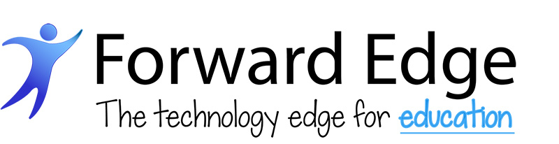

Forward Edge is evaluating whether Rev.io can replace ConnectWise while supporting a hardware-heavy VAR, a ~$6M MSP operation, onsite school services, three brands, and a safe migration for approximately 125 internal users.
Useful financial reporting can require 8+ hours of manual effort. Vendor aggregation and utilization reporting require workarounds or Cognition 360.
Sourced · 14 AugSalesforce, QuoteWorks, ConnectWise, Monday.com, DeskDirector and Cognition 360 divide one operating process across separate tools.
Sourced · 14 AugProduct-only sales orders, purchasing, receiving, rack/bin locations, serialization, project billing, mobile field work and school-specific scheduling all matter.
Sourced · Aug–OctForward Edge has roughly 125 internal users, a long ConnectWise history, 200+ agreements, and workflows that cannot be lost in transition.
Sourced · 7 OctEight-plus hours can be spent assembling a useful financial view. A purchasing agent also spends 1–5 hours each week manually updating PO tracking.
SourcedProjects, reservations and billing are separated today. Forward Edge needs clearer visibility into uninvoiced reserved items and flexible progress billing.
Sourced needScheduling in Monday.com is largely manual; resource conflicts recur; employees navigate duplicate systems and handoffs.
SourcedInvoice-format changes were cited at about $2,500 and 3+ months; paid professional services were cited at about $250/hour. Current platform and add-on costs remain unquantified.
Sourced examplesData neededForward Edge bought DeskDirector because the ConnectWise experience was not acceptable and currently lacks a mobile app for technicians.
SourcedA Q4 2026 choice preserves implementation runway before the July 2027 contract end. Rev.io estimated 4–5 months for setup, migration, testing and training.
SourcedImplementation estimateScenario only. Complete data-needed inputs before approval.
Forward Edge Finance and Operations add platform costs, labor rates, work volumes, and implementation inputs to the shared value model.
Document service, project, inventory, purchasing, agreement, reporting, and customer experience workflows by team.
Continue the working sessions with Forward Edge data, roles, and representative day-to-day processes.
Align executive sponsorship, functional owners, technical resources, and decision-makers across both organizations.
Build the migration, reconciliation, training, parallel-operation, support, timeline, and responsibility plan.
Use the completed model to establish the expected year-one and ongoing operational impact.
Latest source update (21 Oct): the teams were arranging an onsite executive session to continue planning together.